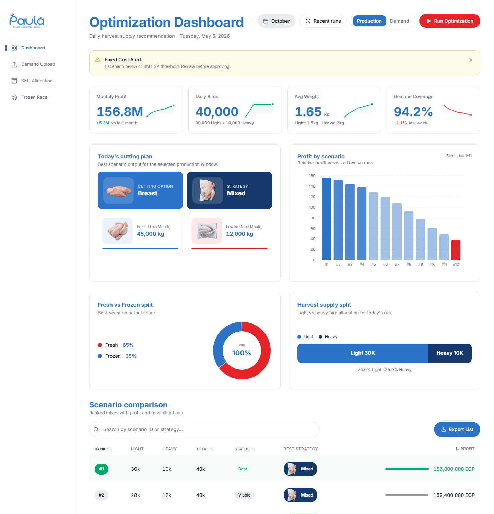
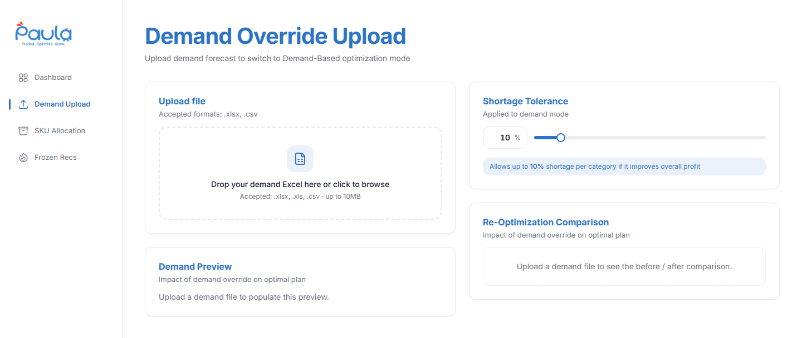
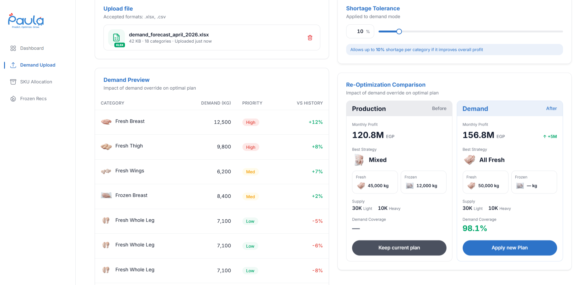
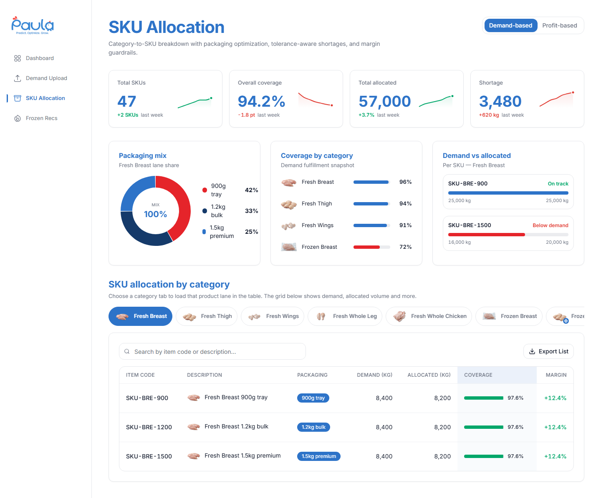
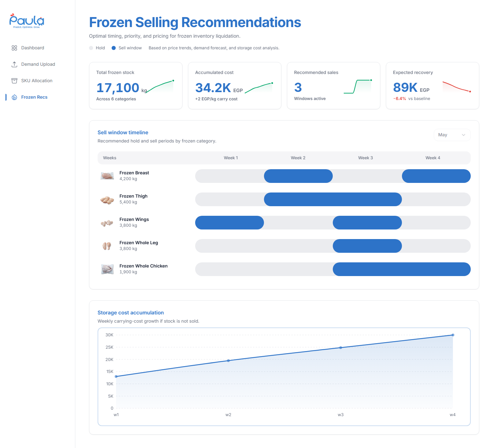

Paula Operations Manual
Cairo 3A · Module 4 — the dual-mode optimization engine that decides each morning how many birds of which weight to slaughter to maximise profit, and surfaces the recommendation, scenario comparison, SKU split, and frozen-stock sell windows in one cockpit.
- 4 pages · 5 views
- Mock data — live wiring pending backend
- Desktop ≥ 1280 px
- EGP · kg · Cairo time
Tip: hover a numbered marker on a screenshot to highlight the matching callout. Click any screenshot to zoom.
Dashboard
The home page. Shows the recommended cutting plan for today and the 12 ranked scenarios behind that recommendation.

- Header & controls Page title + current day, the Recent Runs dialog, the Production / Demand mode toggle, and the red Run Optimization button that triggers a fresh run.
- Fixed Cost Alert Yellow banner appears when any scenario falls below the 41.4M EGP fixed-cost threshold. Tells you how many to review. Dismiss with the × on the right.
- KPI row Monthly Profit · Daily Birds · Avg Weight · Demand Coverage — each with a delta versus the previous run and a small trend sparkline.
- Today's cutting plan What the engine recommends today: dominant cutting target, strategy (All Fresh / All Frozen / Mixed), and the fresh / frozen kg split.
- Profit by scenario All 12 scenarios ranked by expected profit. The winner sits highest in blue; any below the fixed-cost line are red so they jump out.
- Output splits Donut shows the fresh-vs-frozen share of the winning scenario. The bar on the right shows the Light-vs-Heavy bird split (1.5 kg vs 2 kg).
- Scenario comparison Full ranked table — sortable, searchable, exportable as CSV. The best scenario is highlighted with a green-tinted row.
Demand Override
Upload a sales demand forecast to switch the engine from Production to Demand mode. The page walks you through upload, preview, comparison, then apply.
Empty state — before upload

-
Drop zone
Drag & drop an
.xlsxor.csv(up to 10 MB), or click to browse. Download the template first to make sure your columns match (Category, Demand kg, Priority, Shortage tolerance %). - Demand Preview Empty until you upload. After upload, the first 10 categories appear here with priority badges and the % change versus your historical demand.
- Shortage Tolerance How much shortage you'll accept per category in exchange for better overall profit (default 10%). Higher = engine has more freedom to skip low-margin categories.
- Comparison area Once you upload, this card shows side-by-side Production (Before) vs Demand (After) so you can compare before committing.
After upload — preview, compare, apply

- Uploaded file The accepted file with name, size, category count, and timestamp. Click the trash icon on the right to remove it and revert to Production mode.
- Shortage Tolerance Slide between 0% (strict — must cover all demand) and 100% (anything goes). 10% is the default. The comparison updates live as you adjust.
- Demand Preview First 10 categories from your file: requested kg, priority badge (High / Med / Low), and the % change vs your historical demand average. Green = above history, red = below.
- Production (Before) The current Production-mode plan for context: 120.8M EGP, Mixed strategy, 45,000 kg fresh + 12,000 kg frozen, 30K Light + 10K Heavy.
- Demand (After) The re-optimised plan based on your upload: 156.8M EGP, All Fresh, +5M vs Before, 98.1% demand coverage. The green delta confirms it's an improvement.
- Apply or keep Two actions: Keep current plan (dark) dismisses the upload and stays in Production mode; Apply new Plan (blue) commits the Demand-driven plan — the Dashboard and SKU pages then reflect it.
SKU Allocation
Shows how the recommended kilograms split into individual sale items (SKUs) by packaging and category. The packing floor reads this page to know what to fill and how much.

- Mode toggle Demand-based sorts the table by Coverage ascending so shortfalls float to the top. Profit-based sorts by Margin descending so you can spot low-contribution rows to cut.
- KPI row Total SKUs · Overall coverage % · Total allocated kg · Shortage kg. Shortage falls to zero only when coverage hits 100%.
- Packaging Mix Donut showing how the kilograms split across the three pack sizes — 900 g tray, 1.2 kg bulk, 1.5 kg premium.
- Coverage by category Horizontal bars per category. Red bars mark categories below their target coverage so they jump out.
- Demand vs Allocated Per-SKU bar comparison for the worst-performing SKUs — what was asked vs what's planned. Helps zero in on shortfalls.
- Category tabs Filter the table to one category at a time (Fresh Breast, Fresh Thigh, …). The strip scrolls horizontally if there are many tabs.
- SKU table Per-SKU detail: item code, packaging, demand kg, allocated kg, coverage progress bar, margin %. Searchable above and exportable to CSV via Export List.
Frozen Recommendations
Timing, priority, and pricing decisions for frozen inventory. Tells you which frozen categories to hold and which to sell in the coming weeks so you minimise carrying cost and maximise recovery.

- Hold / Sell legend Colour key for the timeline below: grey segments mean hold in cold storage; blue segments are recommended sell windows.
- KPI row Total frozen stock kg · Accumulated carry cost EGP · count of active Sell Windows · Expected recovery EGP (with a delta vs baseline that goes red when the outlook drops).
- Month selector Disabled in this release — activates once the backend reports per-month frozen data. Hovering it shows a small note explaining why.
- Sell window timeline One row per frozen category, four weekly slots (Week 1 – Week 4). Blue bars are sell weeks; adjacent sells are merged into a single bar so multi-week windows read as one block. Hover any bar (or Tab to it) for the exact date range and stock detail.
- Storage cost accumulation Area chart of weekly carry-cost growth if you do nothing. Y-axis auto-scales to real data when the backend reports larger numbers.
A typical day with Paula
A common morning routine takes 10–15 minutes.
- Open Paula — you land on the Dashboard with the latest run already loaded.
- Glance at the KPI row — Monthly Profit, Daily Birds, Avg Weight, Demand Coverage.
- Check for a Fixed Cost Alert — if the banner appears, expand the scenario comparison table and review the red rows.
- Confirm today's cutting plan — make sure the cutting target, strategy, and fresh / frozen kg match the day's production capacity.
- If sales shared a new forecast — open Demand Upload, drop in the file, compare Production (Before) vs Demand (After), and Apply if the new plan is better.
- Open SKU Allocation — confirm coverage of high-priority categories. Switch to Profit-based to scan for low-margin SKUs.
- Open Frozen Recommendations — note which categories are in their sell window this week and brief the cold-storage team.
- Share the approved plan with the packing floor and freezer teams.
Glossary
- EGP
- Egyptian pound — currency unit throughout Paula.
- Light bird
- Chicken in the lighter weight class, average ≈ 1.5 kg.
- Heavy bird
- Chicken in the heavier weight class, average ≈ 2 kg.
- Fresh
- Product sold this month, not frozen.
- Frozen
- Product moved to cold storage to be sold next month or later.
- Strategy
- How the day's output splits across fresh and frozen: All Fresh, All Frozen, or Mixed.
- Scenario
- One of 12 combinations of Light + Heavy birds the engine evaluates each run.
- Fixed cost (FC)
- The fixed-cost threshold the operation must beat. Currently 41.4 million EGP.
- Best
- The scenario with the highest expected profit — the engine's recommendation.
- Viable
- A scenario that clears the fixed cost but is not the top performer.
- Below FC
- A scenario whose expected profit is below the fixed-cost threshold; shown in red.
- Coverage
- Percentage of demand satisfied by the allocated quantity.
- Margin
- Contribution percentage of an SKU — the higher, the more profitable per kilogram.
- SKU
- A specific sale item, identified by a code such as SKU-BRE-900.
- Packaging
- Pack size used to ship a SKU: 900 g tray, 1.2 kg bulk, or 1.5 kg premium.
- Sell window
- A recommended week (or range of weeks) to sell a frozen category to minimise carrying cost.
- Carry cost
- Daily storage cost per kilogram of frozen product.
Known behaviours & limitations
A few things to know about this first release.
- Mock data — the figures shown are sample data wired into the front end to validate the screens. They'll be replaced with live results from the optimization engine once the backend service is connected.
- Frozen month selector — the month dropdown on the Frozen Recommendations page is intentionally disabled. It activates once the backend reports per-month frozen data.
- Dashboard month button — the "October" button at the top right of the Dashboard is a placeholder for the upcoming month filter; it becomes functional with backend support.
- No login — there's no authentication in this version. Anyone with the URL can use the app.
- Light mode only — no dark theme yet.